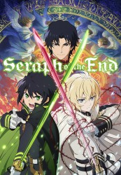

")
 
 IMDB-Wertung: 7.8 / 10
IMDB-Wertung: 7.8 / 10  Metascore:
Metascore: 
Mit dem Auftauchen eines mysteriösen Virus auf der Erde scheint die Menschheit dem Untergang geweiht. Einzig Kinder unter 13 Jahren können diese mysteriöse Epidemie überstehen. Doch für ihr Überleben zahlen sie einen umso höheren Preis. Versklavt von Vampiren aus längst vergangen Zeiten und als deren Blutspender missbraucht, träumt der kleine Yuuichirou Hyakuya davon, seine Peiniger zu vernichten und sich und seine Ziehgeschwister für immer aus ihren Klauen zu befreien. Auf seinem Weg soll er allerdings erst noch erfahren, was es bedeutet, jemand Wichtiges zu verlieren.
Jahr: 2015
Dauer: 23 Minuten
FSK: 16
Land: Japan Studio: AT-XTonspuren: DD2.0 - ,
Untertitel: Deutsch,
Auflösung: 720p (1280x720) Größe: 240 MB
Genre: Action, Drama, Fantasy, Animation/Trick, TV-Serie
Regisseur: Daisuke Tokudo
Drehbuch: Morgan Spurlock
Soundtrack:
Darsteller:
 Miyu Irino als Yuichiro Hyakuya
Miyu Irino als Yuichiro Hyakuya Saori Hayami als Shinoa Hiragi
Saori Hayami als Shinoa Hiragi Yûichi Nakamura als Guren Ichinose
Yûichi Nakamura als Guren Ichinose Daisuke Ono als Norito Goshi
Daisuke Ono als Norito Goshi Takahiro Sakurai als Ferid Bathory
Takahiro Sakurai als Ferid Bathory Ken'ichi Suzumura als Crowley Eusford
Ken'ichi Suzumura als Crowley Eusford Yoshimasa Hosoya als Makoto Narumi
Yoshimasa Hosoya als Makoto Narumi Keiji Fujiwara als Tenri Hiragi
Keiji Fujiwara als Tenri Hiragi Takehito Koyasu als Lucal Wesker
Takehito Koyasu als Lucal WeskerDatei: X:\HD-Anime-Serien\Seraph of the End\Seraph of the End - Battle in Nagoya\Seraph of the End Battle in Nagoya E01 Die Welt der Menschen.mkv seit 21.12.2016
Festplatte: Gemischt-01+Anime
 Es gibt insgesamt 67 Filme in der Gruppe 'HD-Anime-Serien'
Es gibt insgesamt 67 Filme in der Gruppe 'HD-Anime-Serien'